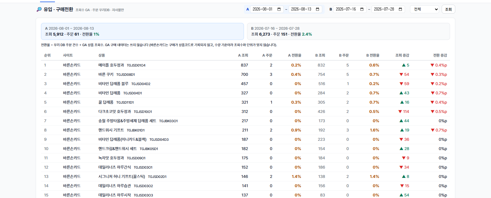
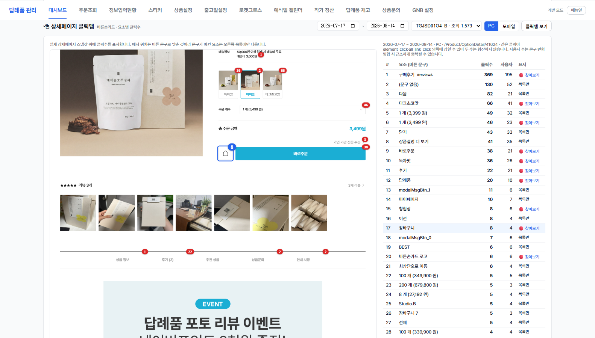
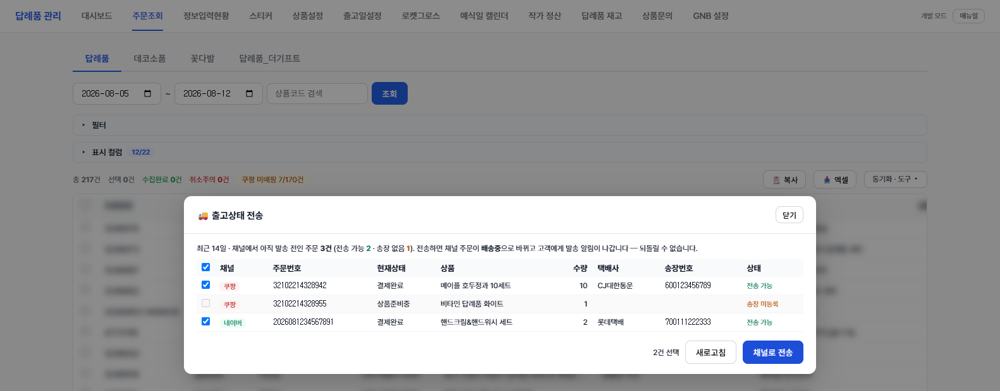
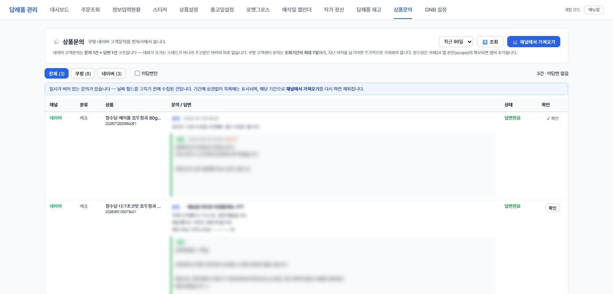

📖 답례품 주문관리 시스템 매뉴얼
1. 시스템 개요
이 시스템은 모든 판매 채널의 답례품 주문을 한곳에 모아 주문 확인 → 스티커 문구 입력 → 인쇄 → 출고까지 관리하고, 채널 통합 매출을 집계하는 도구입니다.
접속 방법
- 주소:
docker-manager.barunsoncard.com/c/barungift/ - 로그인: 회사 구글 계정 (권한이 없다고 나오면 관리자에게 계정 등록 요청)
지원 판매 채널
| 채널 | 수집 방식 | 비고 |
|---|---|---|
| 바른손카드 | 자동 (자사 DB 실시간) | 청첩장 동시구매 포함 |
| 바른손몰 (제휴사) | 자동 (자사 DB 실시간) | 제휴사 코드는 4자리 숫자로 구분 |
| 쿠팡 | 자동 (30분 주기) + 수동 동기화 버튼 | |
| 네이버 (바른손카드/테넷텐) | 자동 (30분 주기) + 수동 동기화 버튼 | |
| 정수당 (카페24) | 자동 (30분 주기) + 수동 동기화 버튼 | 스티커 코드·문구 자동 수집 |
| 바른손더기프트 | CSV 파일 수동 업로드 | 주문조회 → 답례품_더기프트 탭 |
| 쿠팡 로켓그로스 | 정산 리포트(xlsx) 업로드 | 월 정산 후 소급 등록 · 대시보드 매출 전용 |
| 위탁답례품 (COM_ 상품) | 자동 (자사 DB) | 위탁 대시보드에서 별도 정산 |
2. 주문 처리 흐름
3. 대시보드
좌측 메뉴 대시보드는 5개 하위 탭으로 구성됩니다: 📋 매출현황 📊 보조지표1 🔮 보조지표2 📦 상품별 판매통계 🤝 위탁
상단의 기간(시작일~종료일)과 카테고리 탭(답례품/데코소품)이 모든 하위 탭에 공통 적용됩니다. 데코소품 탭에서는 해당 없는 하위 탭(위탁 등)이 자동으로 숨겨집니다.
3-1. 매출현황

- 총 매출 / 총 수량 / 주문 건수 카드 — 기간 내 전 채널 합산. 카드 아래에 채널별(바른손카드·바른손몰·쿠팡·네이버·정수당 등) 금액이 나뉘어 표시됩니다.
- 위탁답례품은 자사 매출과 합산되지 않고 보라색 별도 라인으로 분리 표시됩니다 (총합에는 포함).
- "제휴사 상세 펼치기"를 누르면 바른손몰 제휴사별 세부 금액이 열립니다.
- 어제 vs 오늘 · 지난주 동기간(WoW) 비교 카드와 희망출고일별 매출이 아래에 이어집니다.

3-2. 보조지표 1·2


- 매출 예측 — 예식 수 × 전환율 × 객단가 기반 주차별 예측. 2026년 1주차부터 전체 히스토리가 표시되며, "실제 매출"에는 더기프트 수동등록분이 포함됩니다 (예측 계산은 자사 기준).
- 리드타임 — 주문일 → 희망출고일 간격 분석. 인쇄 일정 계획에 활용.
3-3. 상품별 판매통계

- 📈 주차별 상관관계 — 주차별(일~토) 예식 수·답례품 주문 수·매출 꺾은선 + 전환율 막대. 상단에서 12/26/52주 프리셋 또는 주차 수 직접 입력으로 기간을 바꿉니다. 예식 수는 각 주차의 앞 14일~뒤 7일(28일 윈도우) 예식 합계입니다.

- 🏆 상품 판매 순위 — 일/주/월 단위로 이동하며 상품별 판매수량·매출액·비중을 확인합니다. 변동 컬럼은 직전 기간 대비 순위 등락(▲/▼/NEW)입니다.
- 섹션 구성: 🏢 자사(바른손카드+더기프트) / 🚀 쿠팡 / 🟢 네이버 / 🏬 정수당 — 판매가 없는 채널 섹션은 표시되지 않습니다.
- 행 앞 체크박스 → 🔗 그룹으로 묶기로 같은 상품(채널별 이름이 다른 경우)을 하나로 합칠 수 있습니다 (3-4 참고).

- 상품별 판매 통계 — 좌측 목록에서 상품을 골라(최대 5개) 기간별 매출·수량·주문수·평균 주문가와 일별 추이를 비교합니다. 기간 프리셋(7/30/90/180일)과 전기 대비 옵션 제공.
- 목록은 매출 그룹 단위로 표시됩니다 — 그룹으로 묶인 상품은 자사·쿠팡·네이버·정수당·더기프트 구분 없이 한 줄로 나오고, 선택하면 전 채널 합산으로 집계됩니다.
3-4. 매출 그룹 (상품 묶기) — 핵심 기능
같은 상품인데 채널마다 이름/코드가 달라 여러 줄로 나뉘는 문제를 해결하는 기능입니다. 예: 자사 "메이플 호두정과", 쿠팡 "정수당 메이플 호두정과 답례품 80g(1박스)+감사 스티커…"
- 그룹명이 매출 시트·상품 순위·상품별 통계에서 대표 이름으로 표시되고 수량/매출이 합산됩니다.
- 상품코드/상품명 기준으로 저장되므로 이후 새 매출이 발생해도 그룹이 자동 유지됩니다.
- 이미 다른 그룹에 속한 항목을 다시 묶으면 새 그룹으로 이동합니다 (한 상품 = 한 그룹).
- 그룹을 삭제하면 묶였던 항목들은 다시 개별 표시됩니다 (매출 데이터 자체는 변하지 않음).
3-4½. 유입 · 구매전환 (Google Analytics)

상품 상세페이지가 얼마나 노출되고 그중 몇 명이 실제로 샀는지를 봅니다. 대시보드 → 상품별 판매통계 탭 안에 있습니다.
- 계산 방식: 전환율 = 우리 DB 주문 건수 ÷ GA 상품 조회수. GA의 구매 데이터는 쓰지 않습니다 — 바른손카드는 구매가 상품코드로 기록되지 않고, GA 구매수는 '수량' 기준이라 조회수와 단위가 맞지 않습니다. 우리 DB가 취소·환불까지 반영된 정답입니다.
- 기간 A vs B: A만 넣으면 단일 기간, B까지 넣으면 두 기간을 나란히 비교합니다. 가격 변경 전후를 넣으면 조회수(관심)와 전환율(구매 결심)이 각각 어떻게 움직였는지 갈라 볼 수 있습니다 — 조회는 그대로인데 전환만 떨어졌다면 가격 저항, 조회부터 줄었다면 노출 문제입니다.
- 증감 표시: 조회 증감은 건수(▲▼), 전환 증감은 %p(퍼센트포인트)입니다. 0.6% → 0.2%면 "▼ 0.4%p".
- 장바구니: GA의 담기 수치입니다. 바른손몰은 상품에 직접 연결돼 그대로 나오고, 바른손카드는 담기가 일어난 상세페이지로 귀속시켜 채웁니다(구매 전환과 같은 우회 방식). 다만 장바구니·목록 페이지에서 담은 건은 어느 상품인지 알 수 없어 빠지므로 실제보다 적은 하한값입니다 — 그 사실과 누락 건수를 카드 위에 함께 표시합니다.
- 사이트 구분: 바른손카드 / 바른손몰을 따로 집계하며, 셀렉터로 한쪽만 볼 수 있습니다. 쿠팡·네이버 등 마켓 주문은 GA에 잡히지 않으므로 이 화면 대상이 아닙니다.
- 대상 상품: 답례품(상품코드
TGJ)만 나옵니다. 신규·단종 상품처럼 한 기간에만 있는 상품도 행으로 나옵니다.
3-4¾. 상세페이지 클릭맵 (바른손카드)

상세페이지 안에서 고객이 실제로 무엇을 누르는지를 봅니다. 페이지 스냅샷 위에 빨간 배지로 클릭수가 표시됩니다.
- 여는 법: 상품별 판매통계 탭 → 🖱 상세페이지 클릭맵 → 상품 페이지 선택 → [클릭맵 보기]. 페이지 목록은 기간 내 조회수 순입니다.
- PC / 모바일 전환: 두 화면은 아예 다른 페이지라(버튼 구성도 다름) 따로 봅니다. 전환하면 스냅샷·클릭수가 모두 그 기기 기준으로 바뀝니다. 같은 후기 탭도 PC 366 · 모바일 550처럼 갈립니다.
- 클릭수와 사용자: 클릭수는 반복 클릭이 포함된 값이고, 사용자는 누른 사람 수입니다. "얼마나 많은 사람이 관심을 가졌나"는 사용자로, "얼마나 반복해서 봤나"는 클릭수로 읽으세요.
- 읽는 법: 옵션 배지(다크초코맛 vs 녹차맛)로 어느 맛에 관심이 몰리는지, 바로주문 vs 장바구니 비율, 구매후기를 얼마나 보는지를 알 수 있습니다.
- 오른쪽 목록: 전체 클릭 순위입니다. "찾아보기"가 붙은 줄을 누르면 스냅샷이 그 위치로 이동하고 요소가 파란 테두리로 강조됩니다 — 상세페이지가 3만px이 넘어 눈으로 찾기 어려운 요소를 바로 확인할 수 있습니다.
- 배지 위치는 버튼 문구로 맞추기 때문에, 문구가 바뀌었거나 팝업 안에만 있는 요소는 "목록만"으로 표시됩니다 — 숫자는 그대로 유효합니다.
- 바른손카드 전용: 요소 클릭 추적(element_click)이 바른손카드에만 심어져 있습니다. 바른손몰은 대상이 아닙니다.
- 같은 클릭이 두 종류 이벤트(element_click·all_link_click)에 함께 잡힐 수 있어 두 수를 합산하지 않습니다 — 배지는 한쪽 값만 씁니다.
3-5. 위탁 대시보드·정산

- 위탁답례품(상품코드
COM_)의 매출·수수료·정산액을 희망 출고일 기준으로 집계합니다. - 거래처/기간/정산상태로 필터링하고, 미정산 건은 정산처리 버튼으로 완료 처리합니다 (정산 시점 금액이 저장되어 이후 가격이 바뀌어도 기록 유지).
- 수수료율: 상품별 지정 > 거래처 기본값 순으로 적용.
4. 주문조회

화면은 쓰는 순서대로 3단으로 나뉘어 있습니다. 자주 쓰지 않는 설정은 접혀 있고, 접은 상태는 다음에 들어와도 그대로 유지됩니다.
- 1단 — 조회: 기간 · 상품코드 검색 · [조회]. 매번 쓰는 것만 펼쳐져 있습니다.
- 2단 — 설정(접힘): 성격이 다른 셋을 각각 따로 접어 둡니다.
· 주문상태 필터 — 취소주문 제외 / 결제대기 제외 / 수집완료 숨기기
· 주문사이트 필터 — 어느 채널을 볼지 (답례품 탭에서만 나옵니다)
· 표시 컬럼 — 표에 띄울 열
접어 둔 채로도 걸린 조건이 보이도록 제목 옆에 배지가 붙습니다 — 상태는제외 1, 사이트는7/8, 컬럼은12/22. - 3단 — 동작: 복사 · 엑셀 · (선택 시) 수집완료/수집해제는 표 바로 위에 그대로 있고, 채널 동기화·업로드·정리 도구는 [동기화 · 도구] 묶음 안으로 들어갔습니다.
- 카테고리 탭: 답례품 / 데코소품 / 꽃다발 / 답례품_더기프트
- 주문사이트 필터(답례품 탭 전용): 바른손카드 / 바른손몰 / 쿠팡 / 쿠팡 로켓그로스 / 네이버(바른손카드·테넷텐) / 정수당 / 바른손더기프트 채널별로 좁혀 봅니다. 데코소품·꽃다발·더기프트 탭은 채널이 하나뿐이라 이 구역이 아예 나오지 않습니다.
- 쿠팡은 둘로 갈립니다 —
쿠팡(판매자배송, 우리가 출고)과쿠팡 로켓그로스(쿠팡 물류센터가 출고). 주문사이트 컬럼에도 그대로 표시됩니다. - 표시 컬럼: 표에 표시할 컬럼을 체크박스로 선택합니다.
- 수집복사: 선택한 주문을 인쇄팀 전달용 시트 형식(23열)으로 클립보드에 복사합니다. 품목코드·박스컬러·스티커코드(수량)·문구가 포함됩니다.
- 취소 주문은 상태에 따라 표시됩니다 — 채널 재동기화 시 취소 상태도 자동 갱신됩니다.
4-1. 채널 동기화
- 쿠팡/네이버/정수당은 주기적으로 자동 동기화됩니다 (13장 참고). 급하게 최신 주문을 받아야 하면 표 오른쪽 위 [동기화 · 도구]를 눌러 채널별 동기화 버튼을 쓰세요. 버튼에는 마지막 동기화 시각과 건수가 함께 표시됩니다.
- 쿠팡 동기화는 판매자배송 + 로켓그로스를 함께 가져옵니다. 둘은 쿠팡 쪽 API 계열이 달라 예전에는 판매자배송만 들어왔습니다.
- 쿠팡 상품코드는 11자리 숫자(등록상품ID)로 오는데, 상품설정에 등록해 두면 목록에는 내부 상품코드로 보입니다. 매핑이 없으면 상단에
쿠팡 미매핑 N건배지가 뜨고, 누르면 등록상품ID·옵션ID 컬럼이 켜져 어떤 코드가 빠졌는지 볼 수 있습니다. - 정수당(카페24)은 스티커 품목코드·박스컬러·문구까지 자동으로 들어와 정보입력현황에 "입력완료" 상태로 바로 반영됩니다.
4-2. 더기프트 CSV 업로드

- API 미연동 채널이라 [동기화 · 도구] → 📤 CSV/Excel 업로드로 주문 파일을 올립니다. 같은 주문번호는 덮어쓰기되어 중복되지 않습니다.
- CSV의 결제일자(R열)가 매출 기준일, 판매금액(Q열)이 상품별 매출로 들어갑니다.
- 추가입력옵션(K열)의 스티커 문구는 정보입력현황 문구 칸으로 자동 매핑됩니다.
- 업로드된 주문은 대시보드 매출·상품별 통계·예측 카드 "실제 매출"에 모두 반영됩니다.
4-3. 출고상태 전송 (쿠팡·네이버)

정보입력현황에서 출고처리(송장 등록)를 마친 주문을, Wing·스마트스토어에 다시 들어가 손으로 치지 않고 여기서 한 번에 넘깁니다.
- 여는 곳: 주문조회 → [동기화 · 도구] → 🚚 출고상태 전송
- 목록에 뜨는 것: 최근 14일 중 채널에서 아직 발송 전인 주문 (쿠팡 결제완료·상품준비중 / 네이버 결제완료). 로켓그로스는 쿠팡이 출고하므로 대상이 아닙니다.
- 전송 가능: 우리 시스템에 송장번호와 택배사가 등록된 건만 체크됩니다. 송장 미등록·택배사 코드 없음 건은 체크 자체가 막혀 있습니다 — 먼저 정보입력현황에서 출고처리를 하세요.
- 전송하면: 채널 주문이 배송중으로 바뀌고 고객에게 발송 알림이 나갑니다. 되돌릴 수 없으므로 보내기 전 확인창에서 건수를 한 번 더 확인합니다.
- 결과: 건별 성공/실패와 채널이 준 사유가 그대로 표시됩니다. 일부만 실패해도 나머지는 정상 전송됩니다 (예: "이미 출고 처리된 주문입니다").
5. 정보입력현황

- 모든 채널의 답례품 주문이 모여 스티커 종류·문구·박스·희망출고일을 관리하는 핵심 작업 화면입니다.
- 상태 흐름: 미입력 → 입력완료 → 스티커완료 → 인쇄 → 제본 → 포장 → 출고. 각 단계 버튼으로 진행 처리합니다.
- 🏬 쿠팡창고 탭: 로켓그로스 주문 중 아직 배송완료가 아닌 건이 여기 모입니다. 쿠팡 물류센터가 보관·출고하므로 우리가 할 작업이 없고, 그래서 포장완료 탭에는 섞이지 않습니다. 배송완료되면 출고완료로 넘어갑니다.
- 로켓그로스 주문은 희망출고일이 비어 있는 것이 정상입니다. 우리가 맞춰야 할 출고 기한이 없습니다.
- 입력일시 칸의 채널 표시:
✅ 쿠팡 자동= 판매자배송,🏬 쿠팡 로켓그로스= 로켓그로스. 같은 쿠팡이라도 우리 손이 닿는 범위가 달라 구분합니다. - 문구 컬럼: 고객이 입력한 스티커 문구. 스티커에 상단/하단 필드가 정의된 경우 필드별로, 아니면 통문구로 표시됩니다.
- 빠른출고: 상품명에 "[오늘출발]"이 있으면 자동으로 빠른출고 분류됩니다.
- 편집 버튼으로 스티커 변경·문구 수정·출고일 변경·나눔배송(멀티 그룹) 설정이 가능합니다.
ETC-=바른손몰, CP-=쿠팡, NV-=네이버, CF-=정수당, MO-=더기프트.5-1. 기타출고(사고건)
수량부족·상품훼손·주문누락 같은 사고를 기록하는 탭입니다. 정보입력현황 상단 📚 전체 바로 다음에 있습니다.
물류·재무는 실제로 나간 품목과 수량에 대해서만 매출을 잡습니다. 원주문에 "기타출고였다"는 메모만 남기면 무엇이 몇 개 나갔는지 알 수 없어 재무가 처리할 수 없습니다. 그래서 사고건을 원주문과 분리해 실제 출고 내역까지 기록합니다.
구분 두 가지 — 등록할 때 반드시 하나를 고릅니다.
| 구분 | 의미 | 입력 항목 |
|---|---|---|
| 기타출고 | 실제로 물건이 나간 경우 (재발송·추가발송 등) | 유형 · 사유 · 출고 품목코드와 수량 |
| 운영사고 | 출고 없이 사고만 발생한 경우 (주문 누락 확인 등) | 유형 · 사유 |
사고 유형: 수량부족 · 상품훼손 · 주문누락 · 기타. 사유는 자유롭게 적습니다.
1. 정보입력현황에서 해당 주문 행의 ✎ 수정을 엽니다.
2. 아래쪽 🚨 사고건 영역에서 ＋ 사고건 등록을 누릅니다.
3. 구분·유형·사유를 고르고, 기타출고면 실제 나간 품목과 수량을 입력합니다.
원주문 품목은 ＋ 품목코드 버튼으로 바로 넣을 수 있고, 수량은 직접 고칩니다.
4. 저장하면 🚨 기타출고(사고건) 탭과 전체 탭의 🚨 표시에 함께 반영됩니다.
탭에서 할 수 있는 것
- 구분 필터: 전체 / 기타출고만 / 운영사고만.
- 검색: 주문번호 · 품목코드 · 사유로 찾습니다.
- 📥 엑셀: 물류·재무 전달용. 품목 1건당 1행으로 펼쳐 나오므로 그대로 매출 처리에 쓸 수 있습니다.
- 한 주문에 사고가 여러 번 났으면 여러 건으로 등록됩니다.
6. 스티커 관리

- 스티커 등록: 코드(예:
TGJSD07S2), 이름(예: 클로버), 미리보기 이미지. - 입력 필드(custom fields): "상단문구/하단문구"처럼 고객 입력란을 정의합니다. 정의하면 정보입력 편집 화면에 칸이 나뉘어 표시됩니다.
7. 상품설정

- 상품(품목코드)별로 선택 가능한 스티커 목록과 박스를 매핑합니다.
- 위탁 거래처를 지정하면 해당 상품 매출이 위탁 대시보드·정산에 잡힙니다.
- 대시보드 ERP 코드 매핑: 변형 코드가 다른 상품을 매출 집계에서 묶는 설정 (현재는 3-4의 "매출 그룹" 사용을 권장 — 화면에서 바로 묶을 수 있습니다).
- 판매채널: 이 설정이 어느 채널에서 쓰이는지 복수로 지정합니다 (자사/쿠팡/네이버/정수당/더기프트/기타). 자사 외 채널이 하나라도 있으면 목록 상단에 채널 탭이 생깁니다.
쿠팡 상품 관리
쿠팡용 상품설정의 용도는 두 가지뿐입니다 — 쿠팡 상품코드와 쿠팡 스티커 매핑. 희망출고일·커스텀 입력 같은 기능은 쿠팡 주문에 없습니다. 그래서 코드가 같은지에 따라 두 갈래로 관리합니다.
자사와 같은 코드로 쿠팡에서도 팔면, 설정을 복제하지 말고 기존 행에 쿠팡 채널만 추가합니다. 목록에서 해당 상품들을 체크 → 상단에서 쿠팡 선택 → 채널 추가. 스티커 매핑이 같으므로 설정 하나를 공유하고, 쿠팡 탭에도 함께 보입니다.
쿠팡 전용 코드(
TGCP01D1)에 스티커도 따로(TGCP01S1)라면,
쿠팡 탭에서 상품코드를 입력해 새로 등록합니다. 쿠팡 탭에서 시작하면 판매채널이 쿠팡으로 미리 선택됩니다.
판매채널에 쿠팡을 켜면 아래 입력이 열립니다.
· 등록상품ID — 쿠팡 상품 하나에 붙는 11자리 번호. 주문조회에서 이 코드가 내부 상품코드로 바뀌어 보입니다.
· 옵션ID — 같은 등록상품 안에서 옵션마다 내부코드가 갈릴 때만 넣습니다. 옵션ID 매핑이 등록상품ID보다 우선합니다.
· 판매단위 — 그 채널에서 1 주문이 실제 상품 몇 개인지. 메이플호두정과는 자사 1개 / 쿠팡 10개 묶음이라
10 을 넣습니다. 비우면 1이고, 상품명의 "10세트" 표기로 자동 인식합니다.· 채널 고정 스티커 — 고객이 고르지 않고 반드시 붙는 스티커. 자사 고객 화면에는 노출되지 않습니다.
8. 출고일설정

희망출고일 계산 규칙(주문 후 기본 소요일), 휴무일, 빠른출고 조건 등을 설정합니다. 고객 주문 화면과 정보입력현황의 출고일 계산이 이 설정을 따릅니다.
9. 로켓그로스 매출

로켓그로스는 쿠팡 물류센터가 보관·포장·출고하는 판매 방식입니다. 우리 쪽 작업이 없어 스티커·제본·송장이 발생하지 않습니다. 이 페이지는 그 주문과 정산을 한 화면에서 봅니다.
9-1. 데이터가 들어오는 두 갈래
| 소스 | 주는 것 | 주기 |
|---|---|---|
| 쿠팡 주문 API | 결제완료일 · 상품명 · 주문수량 | 자동 (동기화 스케줄) |
| 정산 리포트 2종 (엑셀) | 매출 · 수수료 · 정산금액 · 배송완료일 · 입출고비 · 배송비 · 취소 여부 | 월 정산 후 수동 업로드 |
9-2. 정산 리포트 업로드
· 파일1 판매 수수료 리포트 (CATEGORY_TR) → 결제완료일 · 매출 · 수수료 · 정산금액
· 파일2 입출고비·배송비 정산 내역 (WAREHOUSING_SHIPPING) → 배송완료일 · 입출고비 · 배송비
- 두 파일은 주문ID + 옵션ID 로 같은 줄에 합쳐집니다. 올리는 순서는 상관없습니다.
- 같은 파일을 다시 올려도 중복되지 않습니다 (덮어쓰기).
- 물류비는 할인 반영 후 최종 부담액을 씁니다. 전액 할인된 달은 0원으로 잡히는 것이 정상입니다.
- 업로드가 끝나면 정보입력현황 단계 반영이 자동으로 한 번 돕니다 (아래 9-4).
9-3. 목록 보는 법
- 매출 기준 — 결제완료일 / 배송완료일 중 어느 날짜를 축으로 볼지 고릅니다. 보통 하루 차이가 납니다.
- 주문수량 / 상품수량 — 주문수량은 쿠팡 리포트 그대로, 상품수량은 거기에 채널 판매단위(7장)를 곱한 실제 출고 개수입니다. 메이플호두정과처럼 쿠팡에서 10개 묶음으로 파는 상품은 주문 1 = 상품 10 입니다.
- 배송완료일 '미등록' — 파일2 가 아직 안 올라왔거나, 아직 배송 전이라는 뜻입니다.
- 상품코드 '미매핑' — 상품설정에 그 쿠팡 코드가 없다는 뜻입니다. 🧩 옵션ID 매핑 갱신을 먼저 눌러보세요.
- 판매자 태그 — 정산 리포트에는 판매자배송 주문도 섞여 있습니다. 그 매출은 쿠팡 채널에서 이미 집계되므로 여기 로켓그로스 매출에서는 빠집니다. 합계 줄에
판매자배송 N건으로 나옵니다. - 방식 미확인 N건 — 그 주문이 아직 쿠팡 주문 정보로 들어오지 않아 로켓그로스인지 판매자배송인지 확정하지 못한 상태입니다. 안전을 위해 로켓그로스 매출에 포함해 둡니다. 📥 주문 가져오기를 그 기간까지 돌리면 채워집니다.
9-4. 버튼 세 개
| 버튼 | 하는 일 | 언제 누르나 |
|---|---|---|
| 🧩 옵션ID 매핑 갱신 | 쿠팡 상품 목록에서 옵션ID ↔ 등록상품ID 를 받아옵니다. 로켓그로스 주문은 옵션ID만 오기 때문에 이 맵이 있어야 상품코드가 붙습니다. | 신상품 등록 직후 (평소엔 자동) |
| 📥 주문 가져오기 | 조회 기간의 로켓그로스 주문을 쿠팡에서 받아 정보입력현황에 만듭니다. 달 단위로 나눠 호출합니다. | 과거분 소급할 때 (평소엔 자동) |
| 🔗 정보입력현황 연동 | 배송완료된 건은 출고완료, 아직인 건은 쿠팡창고 로 단계를 맞춥니다. | 리포트 업로드 후 (자동으로도 돎) |
'주문정보 없음' 이 많이 뜨면 그 주문이 아직 정보입력현황에 없다는 뜻입니다 — 📥 주문 가져오기를 먼저 누르세요.
10. 위탁업체

- 위탁 거래처를 등록하고 기본 수수료율을 설정합니다.
- 포털 토큰을 발급하면 거래처가 로그인 없이 자기 주문/정산 현황을 보는 외부 링크를 만들 수 있습니다.
11. 작가 정산

- 작가별 등록 상품의 결제일 기준 매출과 수수료율에 따른 정산액을 집계합니다.
- 쿠폰/포인트 할인은 주문 내 청첩장(A01) 아이템 수 기준으로 균등 분배 차감됩니다.
- 바른손카드·바른손몰(제휴사 코드 구분용) 모두 동일 규칙이 적용됩니다.
12. 기타 페이지
| 페이지 | 용도 |
|---|---|
| 📊 월간 보고서 | 월 단위 매출·주문 요약 리포트 (보고용 화면) |
| 📦 답례품 재고 | ERP 재고 코드 기준 상품별 재고 현황 |
| 💍 예식일 캘린더 | 주차/일자별 예식 건수 캘린더 — 수요 예측 참고 |
| 💡 SNS 인사이트 | 인기 상품·리드타임 기반 SNS 콘텐츠 소재 추천 |
| 📝 일지 | 일별 운영 기록 + 당일 매출 메트릭 스냅샷 |


쿠팡창고 열
🚚 쿠팡재고 갱신을 누르면 쿠팡 물류센터(로켓창고)의 주문가능 수량을 가져와 자사 재고 옆에 함께 보여줍니다.
- 표시 수량은 판매코드 개수입니다 — 쿠팡이 주는 옵션 단위 수량에 채널 판매단위(7장)를 곱한 값. 셀에 마우스를 올리면 근거(옵션 수량 × 판매단위)가 나옵니다.
- 화면을 열 때마다 쿠팡을 부르지 않습니다. 이 버튼을 눌렀을 때만 가져와 저장하고, 화면은 그 값을 읽습니다 (쿠팡 API 는 분당 호출 제한이 있습니다).
-로 비어 있으면 그 품목의 쿠팡 코드가 상품설정에 없다는 뜻입니다.
12-1. 답례품 재고 — 상품 그룹(BOM)
목록은 두 영역으로 나뉩니다.
- 📦 일반 재고 — 등록된 모든 품목. BOM에 묶여도 여기서 빠지지 않습니다. 소진예상일 빠른 순.
- 🧩 BOM 구성 상품 — 상품별 구성. 재고 수치는 반복하지 않고 구성품 이름·소요수량만 적습니다.
1. 일반 재고에서 한 상품에 들어가는 품목들을 체크합니다.
2. 상단에 뜨는 🧩 그룹으로 묶기를 누릅니다.
3. 판매코드가 이미 등록된 매출코드로 채워져 있습니다. 빠진 변형코드가 있으면 추가하세요.
4. 구성품의 역할(원물/부자재/포장재/기타)과 소요수량을 확인하고 저장합니다.
TGJSD1001_A / _B / _C로 갈려 팔리는데
하나만 넣으면 나머지 판매분이 소진에서 빠져 소진예상일이 실제보다 길게 나옵니다.
같은 그룹에 함께 넣으면 판매량이 합산되고, 같은 상품이므로 공용으로 잡히지도 않습니다.
소진 계산: 구성품 소진 = (그룹의 모든 판매코드 판매량 합) × 소요수량 + 그 품목이 단독으로 팔린 수량.
수정·해제: 그룹 헤더의 ✎ 수정으로 판매코드와 구성품을 함께 고칩니다. 저장하면 그 그룹이 입력한 내용으로 대체되므로 빼는 것도 반영됩니다. 해제는 구성만 지우고 재고 등록은 남깁니다.
구성품이 아직 재고관리에 없으면 회색 줄로 자리만 남고 ＋ 등록으로 그 자리에서 등록할 수 있습니다.

12-2. 상품문의

채널 관리자에 각각 들어가 확인하던 고객문의를 한 화면에 모읍니다.
- 구조: 네이버 고객문의는 문의 1건 + 답변 1건입니다. 대화가 오가는 스레드가 아니라서 주고받은 이력이 따로 없습니다. 파란 문의 블록이 고객이 쓴 글, 초록 테두리의 답변 블록이 우리 답변이며 각각 일시가 붙습니다.
- 답변까지 걸린 시간: 답변 일시 옆에 "8일 후"처럼 표시됩니다. 응대가 늦은 건을 바로 알 수 있습니다.
- 분류: 채널이 준 문의 유형(배송·상품 등)입니다.
- 확인: 채널 답변 여부와 별개로 우리가 봤는지를 표시합니다. 답변완료여도 운영이 확인해야 할 내용이 있을 수 있습니다.
- 가져오기: [채널에서 가져오기]로 수집합니다. 쿠팡은 조회기간이 최대 7일이라 지난 이력을 남기려면 주기적으로 가져와야 합니다.
13. 자동화 (동기화 스케줄)
| 작업 | 주기 | 방식 |
|---|---|---|
| 쿠팡 / 네이버 / 정수당 주문 동기화 | 약 30분 간격 | 외부 스케줄러(cron-job.org)가 API 호출 |
| 쿠팡 동기화 (마켓플레이스 + 로켓그로스 + 옵션ID 맵) | 15분 간격 | 서버 내부 스케줄 — 외부 설정 불필요 |
| 네이버 구매확정일 채우기 | 매일 04:10 | 서버 내부 스케줄 — 자동 구매확정이 늦게 걸려 동기화가 놓친 건을 메움 |
| 답례품 재고 슬랙 알림 | 매일 지정 시각 | 서버 내부 스케줄 (재고 화면에서 시각 변경) |
| 주문 RAW 시트 동기화 | 매일 03:00 | 서버 내부 스케줄 |
| 화환·청첩장 데일리 리포트 (Slack) | 매일 00:02 | 별도 컨테이너 (사업운영-본부 채널 발송) |
COUPANG_AUTO_SYNC_DISABLED=1, 주기를 바꾸려면
COUPANG_SYNC_INTERVAL_MIN 을 씁니다. (중복이어도 덮어쓰기라 데이터가 틀어지지는 않고, 쿠팡 호출량만 늘어납니다.)
14. 자주 묻는 질문 (FAQ)
Q. 특정 채널 주문이 안 보여요.
① 주문조회 → [동기화 · 도구]에서 해당 채널 동기화 버튼을 눌러보세요. ② 주문상태 필터·주문사이트 필터에 조건이 걸려있는지 확인하세요 (각 제목 옆 배지로 보입니다). ③ 그래도 없으면 채널 관리자(Wing/스마트스토어/카페24)에서 주문 상태를 확인 후 담당자에게 문의하세요.
Q. 스티커 문구가 화면에 안 보여요.
정보입력현황의 편집 버튼을 눌러 상세에서 확인하세요. 문구가 저장돼 있는데 목록에 안 보이면 새로고침 후에도 같은지 확인하고 담당자에게 알려주세요.
Q. 로켓그로스 주문이 정보입력현황에 안 보여요.
로켓그로스는 쿠팡 쪽 API 계열이 달라 별도로 수집합니다. 자동 동기화가 도니 보통은 15분 안에 들어옵니다. 과거분이라면 로켓그로스 매출 페이지에서 기간을 잡고 📥 주문 가져오기를 누르세요.
Q. 로켓그로스 주문의 상품코드가 미매핑이에요.
로켓그로스 주문은 옵션ID만 옵니다. 로켓그로스 매출 페이지의 🧩 옵션ID 매핑 갱신을 눌러 옵션ID ↔ 등록상품ID 를 받아오면 상품설정의 등록상품ID 매핑이 걸립니다. 그래도 남으면 그 상품의 쿠팡 코드가 상품설정에 없는 것입니다 (7장).
Q. 쿠팡창고 탭에 있는 건 우리가 출고 처리해야 하나요?
아닙니다. 쿠팡 물류센터가 보관·포장·출고합니다. 배송이 끝나면 정산 리포트를 올릴 때 자동으로 출고완료로 넘어갑니다.
Q. 같은 상품이 대시보드에 여러 줄로 나와요.
채널마다 상품명이 달라서입니다. 3-4 매출 그룹으로 묶으면 한 줄로 합산됩니다.
Q. 매출 숫자가 화면마다 조금 달라요.
화면별 기준이 다를 수 있습니다 — 매출현황은 주문일, 위탁 정산은 희망출고일, 작가 정산은 결제일 기준입니다. 또한 로켓그로스는 정산 리포트 업로드 후에만 반영됩니다.
Q. 취소된 주문이 아직 활성으로 보여요.
해당 채널 동기화를 한 번 실행하면 취소 상태가 반영됩니다.
Q. 더기프트 CSV를 두 번 올렸는데 괜찮나요?
네. 같은 주문번호는 덮어쓰기되어 중복 등록되지 않습니다. 로켓그로스 리포트도 동일합니다.
Q. 사고가 났는데 기타출고와 운영사고 중 뭘로 등록하나요?
물건이 실제로 나갔으면 기타출고입니다. 재발송·추가발송처럼 출고가 있었다면 나간 품목과 수량을 반드시 입력하세요 — 재무는 이 수량만 매출로 잡습니다. 출고 없이 사고만 있었다면 운영사고로 등록합니다. (5-1)
Q. 기타출고 목록에 "품목 미입력"이라고 떠요.
이 기능 도입 전에 등록된 건이라 실제 출고 품목이 기록돼 있지 않습니다. 그 상태로는 매출 처리를 할 수 없으니, ✎로 열어 실제 나간 품목과 수량을 채워 주세요. (5-1)
15. 용어집
| 용어 | 의미 |
|---|---|
| WoW / MoM / YoY | 전주 대비 / 전월 대비 / 전년 동월 대비 증감 |
| 동시구매 | 청첩장과 함께 주문된 답례품 (단독주문의 반대) |
| 위탁답례품 | 외부 거래처 상품을 위탁 판매 (상품코드 COM_ 시작, 수수료 정산 대상) |
| 희망출고일 | 고객이 지정한 출고 희망 날짜 — 인쇄/출고 일정과 위탁 정산의 기준 |
| 리드타임 | 주문일부터 희망출고일까지의 간격(일) |
| 빠른출고 | [오늘출발] 상품 등 당일/익일 출고 건 |
| 매출 그룹 | 채널별로 이름·코드가 다른 같은 상품을 하나로 묶는 설정 (3-4) |
| 로켓그로스 | 쿠팡 물류센터가 보관·포장·출고하는 판매 방식. 우리 쪽 작업이 없어 정보입력현황에서 쿠팡창고 탭으로 따로 봅니다 (9장) |
| 판매자배송 | 쿠팡에서 팔되 우리가 직접 포장·출고하는 방식. 정보입력현황에서 ✅ 쿠팡 자동 으로 표시됩니다 |
| 등록상품ID | 쿠팡 상품 하나에 붙는 11자리 번호(sellerProductId). 상품설정에 넣으면 내부 상품코드로 바꿔 보여줍니다 |
| 옵션ID | 등록상품 안의 옵션 하나에 붙는 번호(vendorItemId). 같은 상품인데 옵션마다 내부코드가 갈릴 때 씁니다 — 등록상품ID보다 우선 |
| 채널 판매단위 | 그 채널에서 1 주문이 실제 상품 몇 개인지. 자사 1개 / 쿠팡 10개 묶음 같은 경우를 맞춥니다 (7장) |
| 로켓창고 | 쿠팡 물류센터. 재고 화면의 쿠팡창고 열은 거기 남은 주문가능 수량입니다 (12장) |
| 수집복사 | 인쇄팀 전달용 23열 시트 형식으로 주문을 클립보드에 복사하는 기능 |
| 기타출고 | 사고로 실제 물건이 추가로 나간 건. 나간 품목·수량을 기록해 물류·재무가 그 수량만 매출로 잡습니다 (5-1) |
| 운영사고 | 출고 없이 사고만 발생한 건. 유형·사유만 기록하고 매출 대상이 아닙니다 (5-1) |
| 전환율 | 예식 수 대비 답례품 주문 비율 (예식 윈도우 기준) |
문의: 운영 담당자 · 이 매뉴얼은 시스템 업데이트에 따라 갱신됩니다. (최종 갱신 2026-08-07 — 로켓그로스 연동)